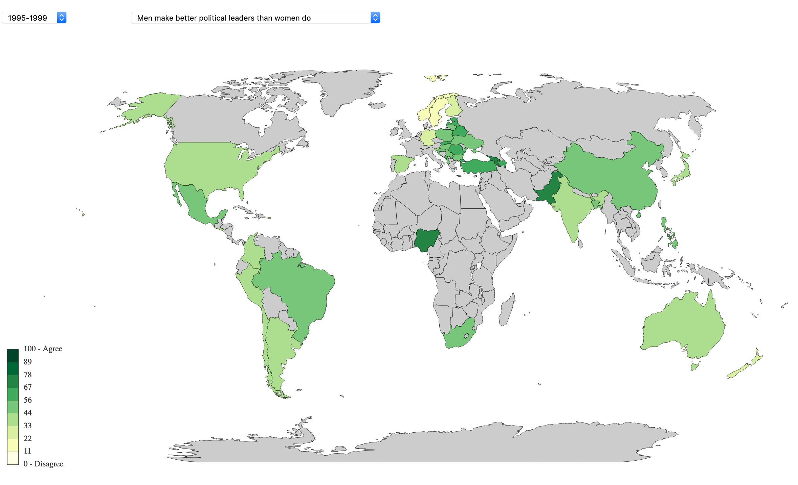
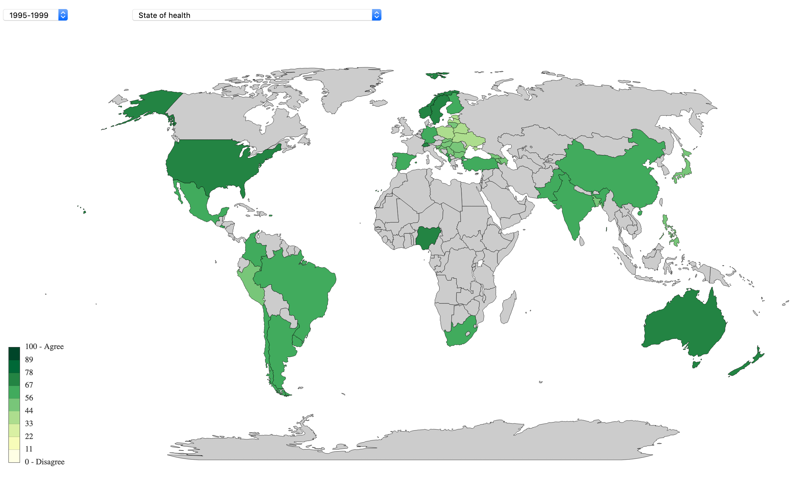
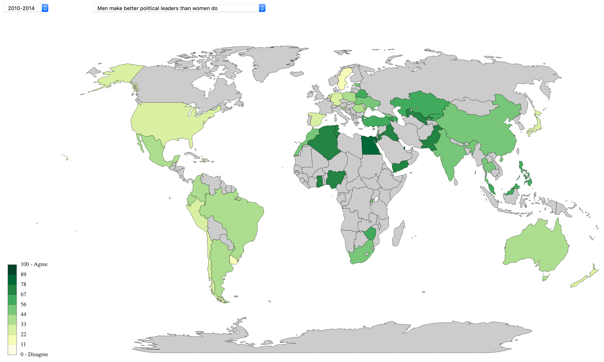
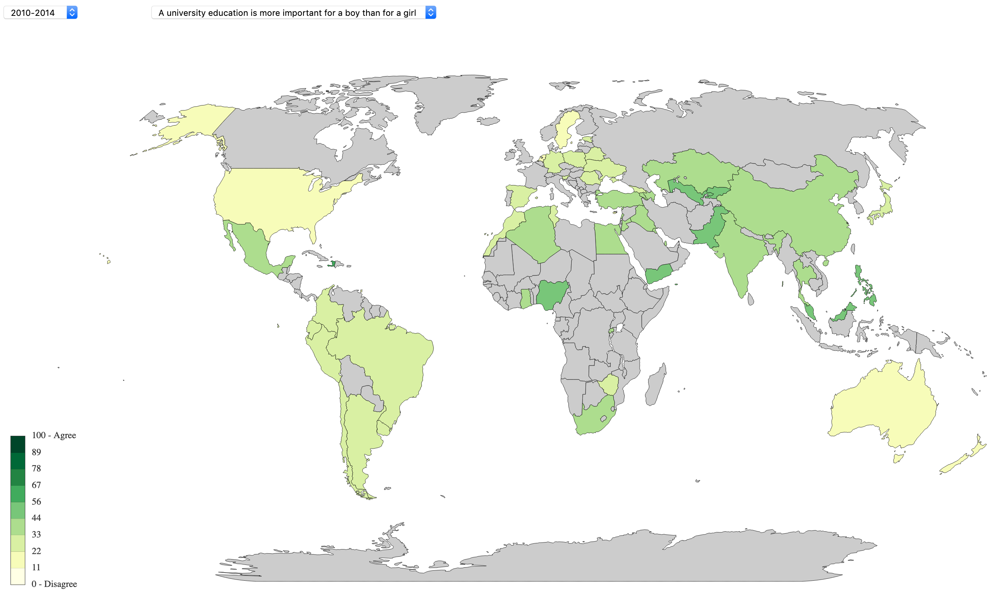
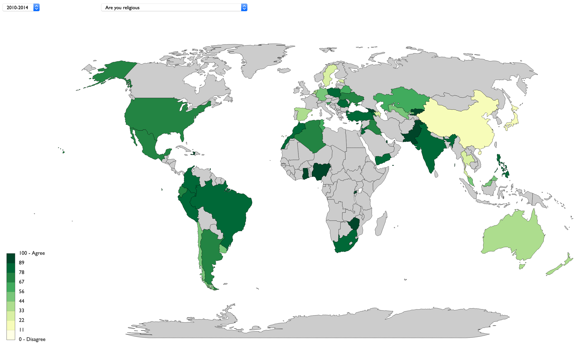
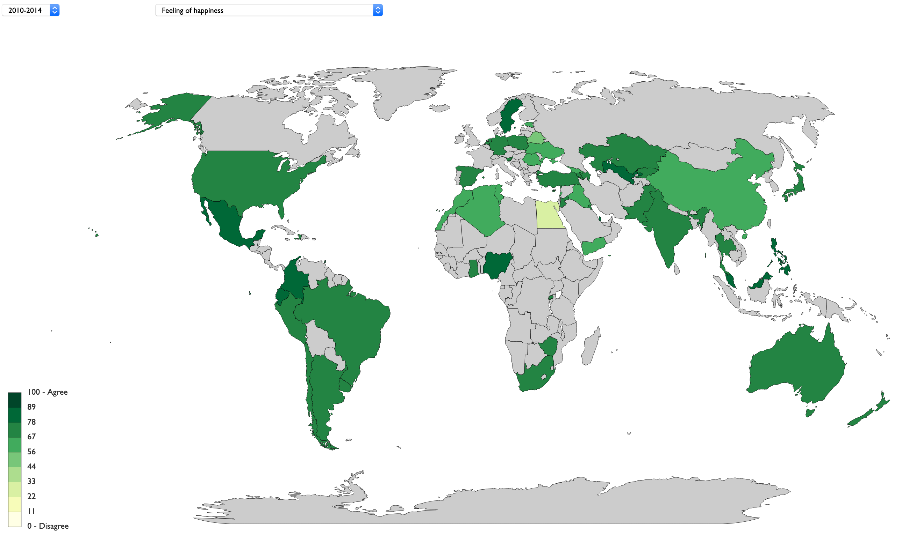
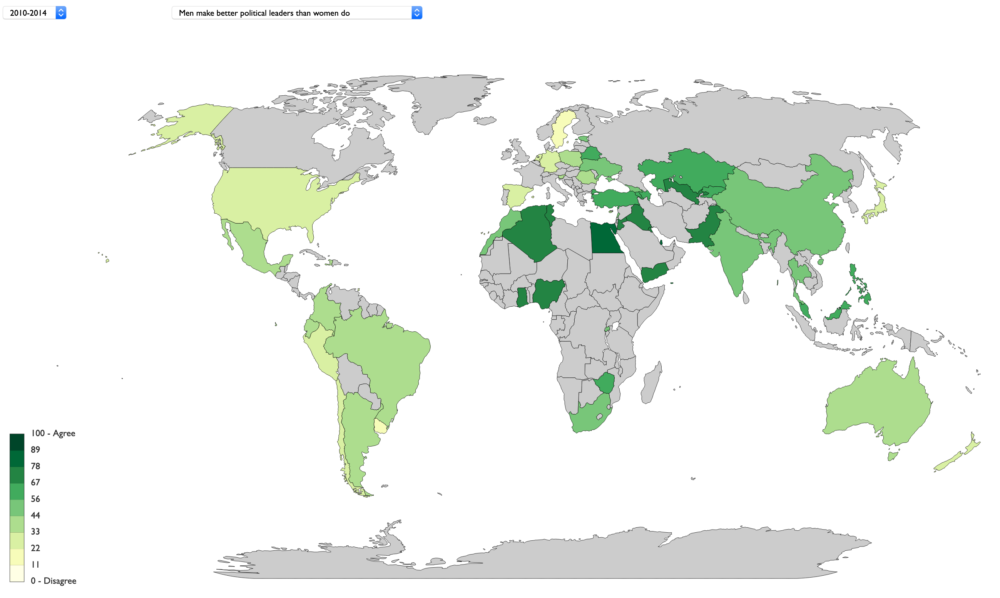

Data Source:
World Values Survey
Author: Filippa Bång
The World Values Survey data is visualized as a choropleth-map. This enables visual comparison between 30 countries. With two dropdowns, 8 different values can be represented on the map over a time period of 20 years.
Discovery Process and Learning - Equality
In the first discovery process, we want to acquire a deeper insight in the value Men make better political leaders than women do. As an first observation, we compare the distribution over the world of the values State of Health and Men make better political leaders than women do for the same period of time, i.e. 1995-1999. This gives us a visual cue that believing that men make better political leaders than women is more common in countries where people find their state of health more poor and the other way around. This can be seen due to a pattern with opposite intensity of green in the State of Health-map and the Men make better political leaders than women do-map. By changing the time period, we can see that this pattern is to be found for the years 2000-2014 as well, although, the thought that Men make better political leaders than women do generally seems to have decreased in itensity over time.
Men make better political leaders than women do - 1995-1999

State of Health - 1995-1999

A possible hypothesis is that the question A university education is more important for a boy than for a girl have a similar agreement distribution over the countries, as the question Men make better political leaders than women do. We look at those two questions on the map for the same periods of time. Although the level of agreement on the question A university education is more important for a boy than for a girl in general is lower than for Men make better political leaders than women do, the intra-questional properties are the same, and if the maps would be normalized, the visual similarity would increase.
Men make better political leaders than women do - 2010-2014

A university education is more important for a boy than for a girl - 2010-2014

Discovery Process and Learning - Religiosity
In the second discovery process, we use the visualization to observe the distribution of agreement for the question Are you religious. We start out by comparing the geographical distributions for the questions Are you religious and Feeling of happiness. We are not able to see any visual correlation between the two distributions. This fact gives us a clue that the subjective feeling of happiness in a country doesn't variate with the religiousness. We can see that the level of religiousness variate more between the countries than the level of happiness. The countries Sweden, China and Japan have a bright color on the map and are among the most secular while Mali, Georgia and Poland are most religious and have therefor a dark green color. We can as well see that there is no correlation between the variables Are you religious and Men make better political leaders than women do - 2010-2014. We can although see that both variables have low agreement in the nordic countries, indicating secularity and equality.
Are you religious - 2010-2014

Feeling of happiness - 2010-2014

Men make better political leaders than women do - 2010-2014
